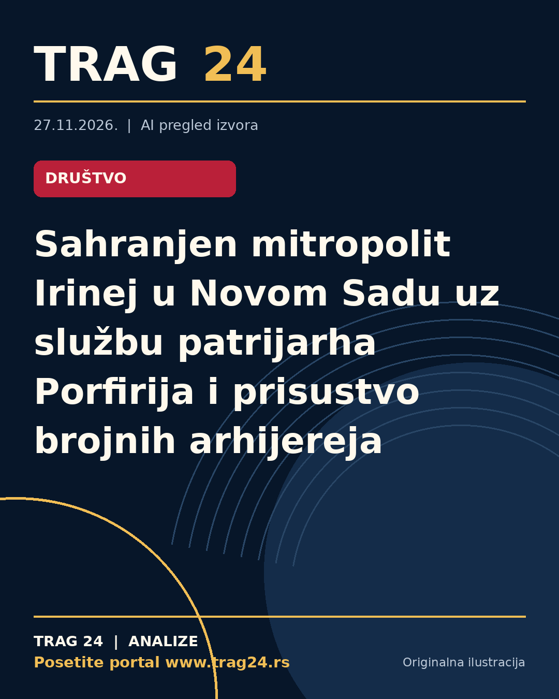

Sahranjen mitropolit Irinej u Novom Sadu uz službu patrijarha Porfirija i prisustvo brojnih arhijereja

ŠTA SE DOGODILO
Arhiepiskop novosadski i mitropolit bački Irinej sahranjen je u kripti Sabornog hrama Svetog velikomučenika Georgija u Novom Sadu, nakon što je preminuo 24. novembra. Opelo je služio patrijarh Srpske pravoslavne crkve (SPC) Porfirije, a liturgija je održana u hramu Sveta tri Jerarha ujutru.
HRONOLOGIJA
Liturgija je održana u 9 časova u hramu Sveta tri Jerarha u Novom Sadu, a opelo je služeno u 12 časova. Nakon opela, sahrana je obavljena u kripti Sabornog hrama Svetog velikomučenika Georgija. U službi su učestvovali brojni arhijereji SPC i predstavnici pomesnih pravoslavnih crkava iz inostranstva. Među prisutnima bili su vernici, zvaničnici i političari, uključujući poslanike Srpske napredne stranke.
ŠTA NAVODE IZVORI
Patrijarh Porfirije je tokom besede istakao da je mitropolit Irinej bio okupljajući i jedinstevajući glas koji je svojim rečima prizivao Hristovo Jevanđelje, a okupljali su se oko njega ljudi različitih slojeva i sa različitih strana. Mitropolit volokolamski Antonije pročitao je pismo patrijarha moskovskog Kirila, koji je izrazio saučešće i istakao značaj Irinejevog doprinosa jedinstvu Pravoslavlja. Arhiepiskop Rastislav iz Češke i Slovačke istakao je Irinejevu čvrstinu duha i hrišćansko srce, dok je mitropolit krfski Nektarije naglasio njegovu ulogu kao velikog teologa i pastira pravoslavne crkve.
ŠTA JE POTVRĐENO
Potvrđeno je da je opelo služio patrijarh Porfirije u prisustvu brojnih visokih crkvenih i političkih zvaničnika. Održana je liturgija i opelo, a sahrana je obavljena u kripti Sabornog hrama Svetog Georgija u Novom Sadu. Pismo saučešća patrijarha Kirila je pročitano i izraženo je poštovanje prema mitropolitu Irineju kao istaknutom jerarhu i teologu SPC. Prisustvovali su i predstavnici više pomesnih pravoslavnih crkava.
ŠTA NIJE POTVRĐENO
Nema podataka o uzrocima smrti mitropolita Irineja u dostavljenim tekstovima. Takođe, nema potvrda o eventualnim političkim ili drugim kontekstima vezanim za sahranu osim prisustva pojedinih političara. Nisu izneti detalji o daljim aktivnostima crkve nakon sahrane ili o nasleđu koje će ostaviti.
ŠTA OSTАJE OTVORENO: Ostaje otvoreno kako će se sećanje na mitropolita Irineja dalje institucionalno negovati unutar SPC i na međunarodnom pravoslavnom nivou. Takođe, nije poznato da li će biti organizovane dodatne proslave, komemoracije ili druge duhovne aktivnosti u njegovu čast.
Izvori
- https://mondo.rs/Info/Drustvo/a2317803/sahranjen-irinej-bulovic.html
- https://n1info.rs/vesti/patrijarh-porfirije-i-arhijereji-sluzili-opelo-mitropolitu-irineju-u-novom-sadu/
- https://www.danas.rs/vesti/drustvo/patrijarh-porfirije-i-arhijereji-sluzili-opelo-mitropolitu-irineju-u-novom-sadu/
Ova analiza je pripremljena uz pomoć veštačke inteligencije na osnovu javno dostupnih izvora. Navodi izvora nisu nužno nezavisno potvrđeni.